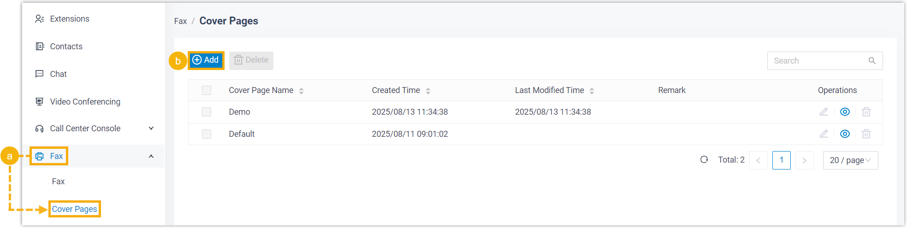
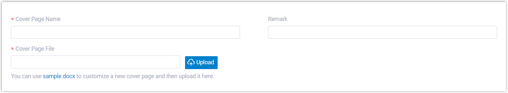
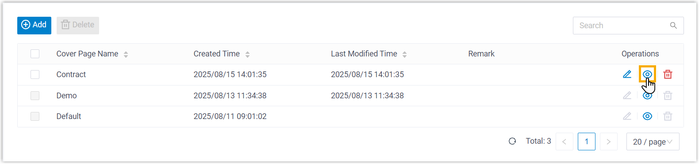

Add a Fax Cover Page
Fax Cover Page appears as the first page of an outbound fax, typically displaying essential fields such as sender information, recipient details, brief message, etc. This topic describes how to configure a fax cover page from Linkus Desktop Client.
Limitations
A maximum of 10 custom fax cover pages are supported.
Requirements
System administrator has granted you the permission to send faxes.
Prerequisites
Prepare a fax cover page file that meets the following requirements:
Tip: You can download and use the sample.docx file to customize a new cover page, then
convert it to PDF for upload.
- File format:
.pdf - File size: Less than 5MB
Note: Encrypted PDF file is NOT
supported.
Procedure
- Access the creation page of fax cover page.

- Log in to Linkus Desktop Client, go to .
Fax cover pages created by system administrator are displayed in the list.
- Click Add to create a custom cover page.
- Log in to Linkus Desktop Client, go to .
- Complete the following settings.

Setting Description Cover Page Name Enter a name to help you identify the cover page. Remark Enter a short description. Cover Page File Click Upload to upload a PDF file. - Click Save.
Result
- The fax cover page is created and displayed in the list.Tip: You can click to preview the cover page in a browser tab.

- When sending outbound faxes from Linkus Desktop or Web Client, you can select and use the cover page.